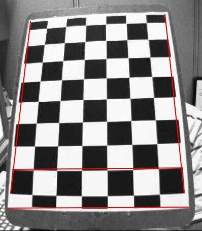
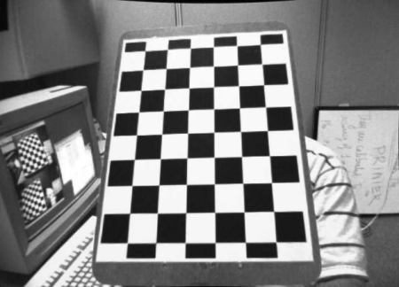

Camera Calibration
Goal
In this section,
- We will learn about distortions in camera, intrinsic and extrinsic parameters of camera etc.
- We will learn to find these parameters, undistort images etc.
Basics
Today’s cheap pinhole cameras introduces a lot of distortion to images. Two major distortions are radial distortion and tangential distortion.
Due to radial distortion, straight lines will appear curved. Its effect is more as we move away from the center of image. For example, one image is shown below, where two edges of a chess board are marked with red lines. But you can see that border is not a straight line and doesn’t match with the red line. All the expected straight lines are bulged out. Visit Distortion (optics) for more details.
This distortion is represented as follows:
Similarly, another distortion is the tangential distortion which occurs because image taking lense is not aligned perfectly parallel to the imaging plane. So some areas in image may look nearer than expected. It is represented as below:
In short, we need to find five parameters, known as distortion coefficients given by:
In addition to this, we need to find a few more information, like intrinsic and extrinsic parameters of a camera. Intrinsic parameters are specific to a camera. It includes information like focal length (\(f_x,f_y\)), optical centers (\(c_x, c_y\)) etc. It is also called camera matrix. It depends on the camera only, so once calculated, it can be stored for future purposes. It is expressed as a 3x3 matrix:
Extrinsic parameters corresponds to rotation and translation vectors which translates a coordinates of a 3D point to a coordinate system.
For stereo applications, these distortions need to be corrected first. To find all these parameters, what we have to do is to provide some sample images of a well defined pattern (eg, chess board). We find some specific points in it ( square corners in chess board). We know its coordinates in real world space and we know its coordinates in image. With these data, some mathematical problem is solved in background to get the distortion coefficients. That is the summary of the whole story. For better results, we need atleast 10 test patterns.
Code
As mentioned above, we need atleast 10 test patterns for camera calibration. OpenCV comes with some images of chess board (see samples/cpp/left01.jpg left14.jpg), so we will utilize it. For sake of understanding, consider just one image of a chess board. Important input datas needed for camera calibration is a set of 3D real world points and its corresponding 2D image points. 2D image points are OK which we can easily find from the image. (These image points are locations where two black squares touch each other in chess boards)
What about the 3D points from real world space? Those images are taken from a static camera and chess boards are placed at different locations and orientations. So we need to know \((X,Y,Z)\) values. But for simplicity, we can say chess board was kept stationary at XY plane, (so Z=0 always) and camera was moved accordingly. This consideration helps us to find only X,Y values. Now for X,Y values, we can simply pass the points as (0,0), (1,0), (2,0), … which denotes the location of points. In this case, the results we get will be in the scale of size of chess board square. But if we know the square size, (say 30 mm), and we can pass the values as (0,0),(30,0),(60,0),…, we get the results in mm. (In this case, we don’t know square size since we didn’t take those images, so we pass in terms of square size).
3D points are called object points and 2D image points are called image points.
Setup
So to find pattern in chess board, we use the function, cv2.findChessboardCorners(). We also need to pass what kind of pattern we are looking, like 8x8 grid, 5x5 grid etc. In this example, we use 7x6 grid. (Normally a chess board has 8x8 squares and 7x7 internal corners). It returns the corner points and retval which will be True if pattern is obtained. These corners will be placed in an order (from left-to-right, top-to-bottom)
Once we find the corners, we can increase their accuracy using cv2.cornerSubPix(). We can also draw the pattern using cv2.drawChessboardCorners(). All these steps are included in below code:
import numpy as np import cv2 import glob # termination criteria criteria = (cv2.TERM_CRITERIA_EPS + cv2.TERM_CRITERIA_MAX_ITER, 30, 0.001) # prepare object points, like (0,0,0), (1,0,0), (2,0,0) ....,(6,5,0) objp = np.zeros((6*7,3), np.float32) objp[:,:2] = np.mgrid[0:7,0:6].T.reshape(-1,2) # Arrays to store object points and image points from all the images. objpoints = [] # 3d point in real world space imgpoints = [] # 2d points in image plane. images = glob.glob('*.jpg') for fname in images: img = cv2.imread(fname) gray = cv2.cvtColor(img, cv2.COLOR_BGR2GRAY) # Find the chess board corners ret, corners = cv2.findChessboardCorners(gray, (7,6), None) # If found, add object points, image points (after refining them) if ret == True: objpoints.append(objp) corners2=cv2.cornerSubPix(gray,corners, (11,11), (-1,-1), criteria) imgpoints.append(corners) # Draw and display the corners cv2.drawChessboardCorners(img, (7,6), corners2, ret) cv2.imshow('img', img) cv2.waitKey(500) cv2.destroyAllWindows()
One image with pattern drawn on it is shown below:

Calibration
So now we have our object points and image points we are ready to go for calibration. For that we use the function, cv2.calibrateCamera(). It returns the camera matrix, distortion coefficients, rotation and translation vectors etc.
ret, mtx, dist, rvecs, tvecs = cv2.calibrateCamera(objpoints, imgpoints, gray.shape[::-1], None, None)
Undistortion
We have got what we were trying. Now we can take an image and undistort it. OpenCV comes with two methods, we will see both. But before that, we can refine the camera matrix based on a free scaling parameter using cv2.getOptimalNewCameraMatrix(). If the scaling parameter alpha=0, it returns undistorted image with minimum unwanted pixels. So it may even remove some pixels at image corners. If alpha=1, all pixels are retained with some extra black images. It also returns an image ROI which can be used to crop the result.
So we take a new image (left12.jpg in this case. That is the first image in this chapter)
img = cv2.imread('left12.jpg') h, w = img.shape[:2] newcameramtx, roi=cv2.getOptimalNewCameraMatrix(mtx, dist, (w,h), 1, (w,h))
1. Using
This is the shortest path. Just call the function and use ROI obtained above to crop the result.
# undistort dst = cv2.undistort(img, mtx, dist, None, newcameramtx) # crop the image x, y, w, h = roi dst = dst[y:y+h, x:x+w] cv2.imwrite('calibresult.png', dst)
2. Using
This is curved path. First find a mapping function from distorted image to undistorted image. Then use the remap function.
# undistort mapx, mapy = cv2.initUndistortRectifyMap(mtx, dist, None, newcameramtx, (w,h), 5) dst = cv2.remap(img, mapx, mapy, cv2.INTER_LINEAR) # crop the image x, y, w, h = roi dst = dst[y:y+h, x:x+w] cv2.imwrite('calibresult.png', dst)
Both the methods give the same result. See the result below:
You can see in the result that all the edges are straight.
Now you can store the camera matrix and distortion coefficients using write functions in Numpy (np.savez, np.savetxt etc) for future uses.
Re-projection Error
Re-projection error gives a good estimation of just how exact is the found parameters. This should be as close to zero as possible. Given the intrinsic, distortion, rotation and translation matrices, we first transform the object point to image point using cv2.projectPoints(). Then we calculate the absolute norm between what we got with our transformation and the corner finding algorithm. To find the average error we calculate the arithmetical mean of the errors calculate for all the calibration images.
mean_error = 0 for i in xrange(len(objpoints)): imgpoints2, _ = cv2.projectPoints(objpoints[i], rvecs[i], tvecs[i], mtx, dist) error = cv2.norm(imgpoints[i], imgpoints2, cv2.NORM_L2)/len(imgpoints2) mean_error += error print( "total error: {}".format(mean_error/len(objpoints)) )
Additional Resources
Exercises
- Try camera calibration with circular grid.
See also:
This function may not be able to find the required pattern in all the images. So one good option is to write the code such that, it starts the camera and check each frame for required pattern. Once pattern is obtained, find the corners and store it in a list. Also provides some interval before reading next frame so that we can adjust our chess board in different direction. Continue this process until required number of good patterns are obtained. Even in the example provided here, we are not sure out of 14 images given, how many are good. So we read all the images and take the good ones.
Instead of chess board, we can use some circular grid, but then use the function cv2.findCirclesGrid() to find the pattern. It is said that less number of images are enough when using circular grid.